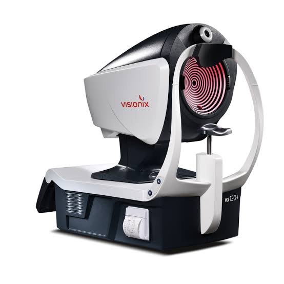
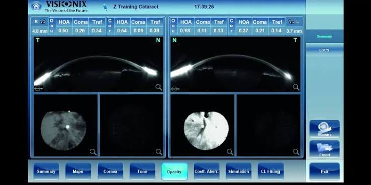
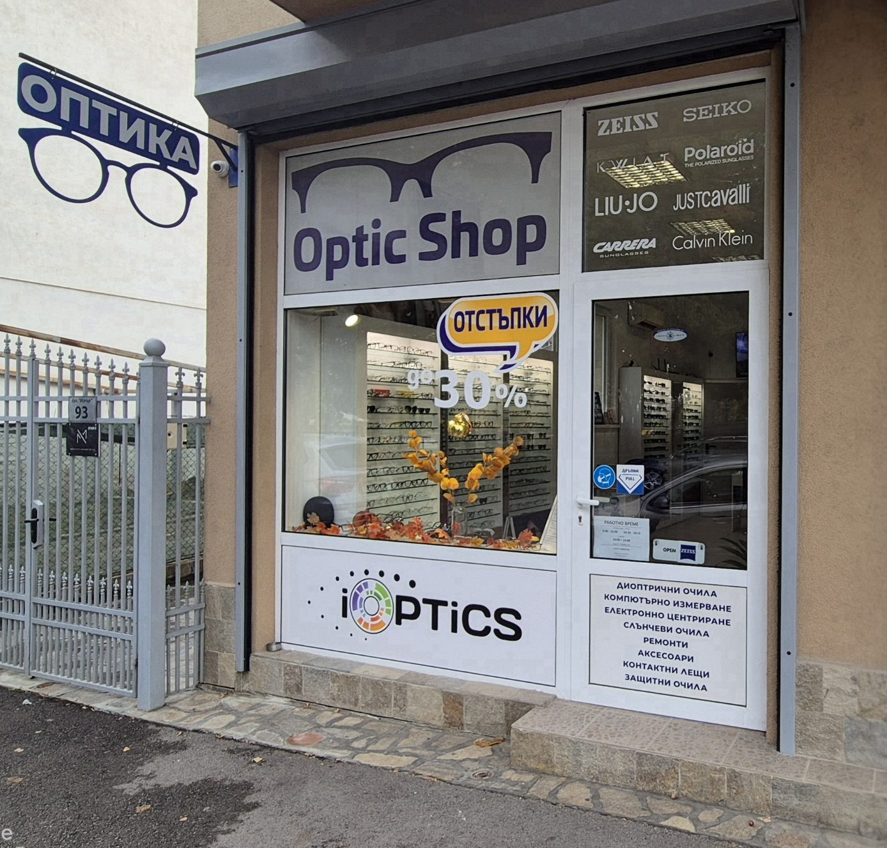

Експерти в оптиката · Прогресивни лещи
Очила, изработени с прецизност — заслужава си пътят.
Над 15 години опит, прецизни измервания и лещи от водещи световни производители. Клиенти идват при нас от цялата страна.

Защо да изберете нас
Добрите очила не започват от рамката, а от точното измерване и правилната леща.
01
Специалисти по прогресивни лещи
Подбираме дизайна според начина ви на живот — мек за плавен преход или твърд за по-широки зони за четене и далеч.
02
Прецизни измервания
Измерваме зеничното разстояние и височината на монтаж с избраната рамка, за да е всяка леща центрирана точно за вашите очи.
03
Водещи производители на лещи
Работим със Zeiss, Synchrony, Shamir и VIST — за всеки диоптър и бюджет.
04
Над 15 години опит
Решаваме и трудните случаи — ако очилата ви не стоят добре, откриваме причината и я отстраняваме.
Технология
Пълен анализ на окото с Visionix VX120+
За няколко минути апаратът прави серия измервания, за които обикновено са нужни няколко отделни уреда:

Подробни резултати за двете очи — основа за точния избор на леща.
Как работим
Една среща, без бързане — от разговора до готовите очила.
Консултация
Разбираме как използвате очилата — работа, шофиране, четене, екран.
Изследване
Компютърно измерване на зрението със съвременна апаратура.
Рамка и леща
Избираме заедно рамката и лещата и правим електронно центриране с нея.
Изработка и нагласяне
Нагласяме очилата по лицето ви и проверяваме дали виждате отлично.
Услуги
Изследване на зрението
Компютърно измерване на диоптъра.
Диоптрични и прогресивни очила
За далече, близо, компютър и всички разстояния.
Слънчеви очила
С UV защита, включително с диоптър.
Детски очила
Здрави и удобни рамки, подбрани за децата.
Също: контактни лещи, защитни очила, ремонти и аксесоари.
Идвате от друг град?
Обадете се предварително и ще запазим време само за вас — без чакане. Идвате веднъж за измерване, а готовите очила ви изпращаме с куриер до вашия адрес.
Къде сме
ул. Искър 93, Самоков
